City of Peace
Hiroshima architecture
Hiroshima was founded in 1589 as a castle town on the Ōta River delta, and its name means 'wide island'. In 1949 Japan's parliament proclaimed it a City of Peace, and it is also famous for its own layered style of okonomiyaki, a savoury pancake cooked on an iron griddle.
- 15Landmarks
- 1168Oldest · Itsukushima Shrine
- 27 mTallest · Hiroshima Castle
- 9Architects
Map and Look Around
Tap a numbered pin to see that landmark from the street with Apple Look Around.
Eat and stay near
Restaurants
Hotels
From Apple Maps. Walking times are estimates from straight-line distance.
Before you go
- Fly intoHiroshima Airport (HIJ)
Hiroshima Airport opened in 1993 in the city of Mihara, about 50 km east of Hiroshima, replacing a smaller waterfront airport that could not handle widebody jets. It is the largest airport in the Chūgoku and Shikoku region, and about 80% of its domestic traffic flies to and from Tokyo Haneda.
- CurrencyJapanese Yen (¥)
- LanguageJapanese
Standard Japanese is spoken everywhere, while locals often use the friendly Hiroshima dialect among themselves. English signs are common around the Peace Memorial Park, the station and other major sights.
- Getting aroundHiroden Streetcars
Hiroden runs the longest tram network in Japan at 35.1 km, with such a varied fleet that it is nicknamed 'The Moving Streetcar Museum'. Its trams were running again within three days of the 1945 bombing, and a few cars that survived that day are still in service.
- Where to stayFind hotels in Hiroshima on Expedia Compare on Booking.com Vacation rentals on Vrbo
Stamped! may earn a commission when you book through these links.
- Tours and ticketsFind tours in Hiroshima on GetYourGuide More tours on Viator
Skip-the-line tickets and guided tours of the landmarks. Stamped! may earn a commission.
15 landmarks in Hiroshima
-

Photo: Wiiii, CC BY-SA 3.0, via Wikimedia Commons Hiroshima Peace Memorial Museum
1-2 Nakajima-chō, Naka-ku, Hiroshima, Japan
Kenzō Tange won the design competition for Peace Memorial Park with a plan built around this museum, whose long main building is lifted on massive columns that frame a view straight through the park to the Atomic Bomb Dome. Opened in 1955, it documents the atomic bombing of 6 August 1945 through victims' belongings, photographs and survivors' testimony. More than a million people visit each year, and a major renovation completed in 2019 refocused the exhibits on the people who lived through that day.
- Built
- 1955
- Architect
- Kenzō Tange
- Style
- Modernism
- Today
- Museum
-
Photo: Oilstreet, CC BY 2.5, via Wikimedia Commons Atomic Bomb Dome
1-10 Ōtemachi, Naka-ku, Hiroshima, Japan
Czech architect Jan Letzel designed this domed exhibition hall, completed in 1915 beside the Aioi Bridge to showcase the prefecture's products and art. On 6 August 1945 the atomic bomb exploded almost directly overhead, and because the blast came from above, the walls and the steel frame of the dome stayed standing while everyone inside was killed. The city voted in 1966 to preserve the ruin permanently, and in 1996 it was named a UNESCO World Heritage Site as a lasting call for peace.
- Built
- 1915
- Architect
- Jan Letzel
- Today
- Memorial
-
Photo: DXR, CC BY-SA 4.0, via Wikimedia Commons Hiroshima Castle
Motomachi, Naka-ku, Hiroshima, Japan
Warlord Mōri Terumoto built this castle on the Ōta River delta in the 1590s, and the town that grew around it took the name Hiroshima. Nicknamed Carp Castle, it was home to the region's feudal lords for nearly three centuries and later served as a military headquarters. The atomic bomb destroyed the main keep in 1945. The five-storey keep you see today is a 1958 reconstruction, about 26.6 metres tall, that houses a museum of the city's history before the Second World War.
- Built
- 1599
- Architect
- Mōri Terumoto (commissioner)
- Style
- Japanese castle
- Height
- 27 m (87 ft)
- Stories
- 5
- Today
- Museum
-
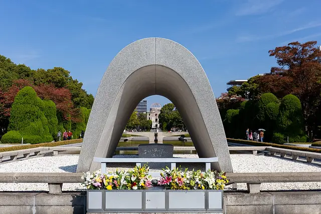
Photo: Balon Greyjoy, CC0, via Wikimedia Commons Memorial Cenotaph
Peace Memorial Park, Nakajima-chō, Naka-ku, Hiroshima, Japan
At the heart of Kenzō Tange's Peace Memorial Park, a saddle-shaped concrete arch shelters a stone chest holding the names of everyone killed by the atomic bomb. Unveiled on 6 August 1952, it is carefully lined up so that visitors look through it to the Peace Flame and the Atomic Bomb Dome beyond. Its epitaph asks the souls to rest in peace because the error will not be repeated, and each 6 August the Peace Memorial Ceremony gathers here for a minute of silence at 8:15 a.m.
- Built
- 1952
- Architect
- Kenzō Tange
- Today
- Memorial
-
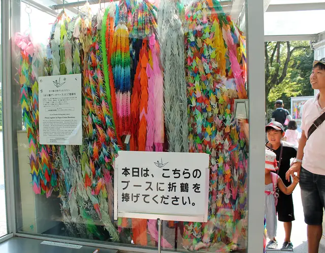
Photo: sarahstierch, CC BY 2.0, via Flickr Children's Peace Monument
Peace Memorial Park, Nakajima-chō, Naka-ku, Hiroshima, Japan
This monument honours Sadako Sasaki, a young girl who died of leukaemia in 1955 caused by the bomb's radiation, and the thousands of other children killed by it. Artists Kazuo Kikuchi and Kiyoshi Ikebe designed it, and school children across Japan raised the money; it was unveiled on Children's Day, 5 May 1958. Sadako stands on top holding a wire crane, and a bronze crane below rings a bell like a wind chime. Visitors from all over the world leave garlands of origami cranes around it.
- Built
- 1958
- Architect
- Kazuo Kikuchi & Kiyoshi Ikebe
- Today
- Monument
-
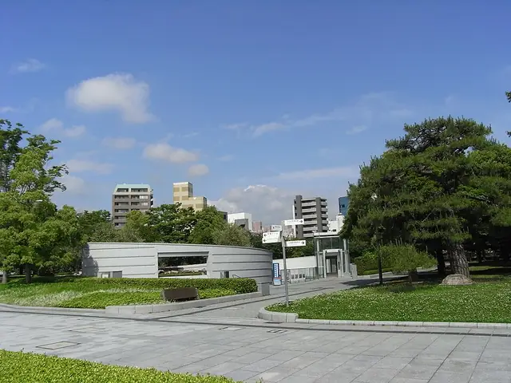
Photo: Taisyo, CC BY-SA 3.0, via Wikimedia Commons Hiroshima National Peace Memorial Hall
Peace Memorial Park, Nakajima-chō, Naka-ku, Hiroshima, Japan
The Japanese national government opened this hall in Peace Memorial Park in 2002 to mourn the victims of the atomic bomb. It was designed by Kenzō Tange, who had planned the park itself half a century earlier. Inside, staff gather the names, photographs and written memories of victims and survivors, an urgent task as the survivors grow older, and share their stories through readings. It stands near the Atomic Bomb Dome, and admission is free. A sister hall serves the same purpose in Nagasaki.
- Built
- 2002
- Architect
- Kenzō Tange
- Today
- Memorial hall
-
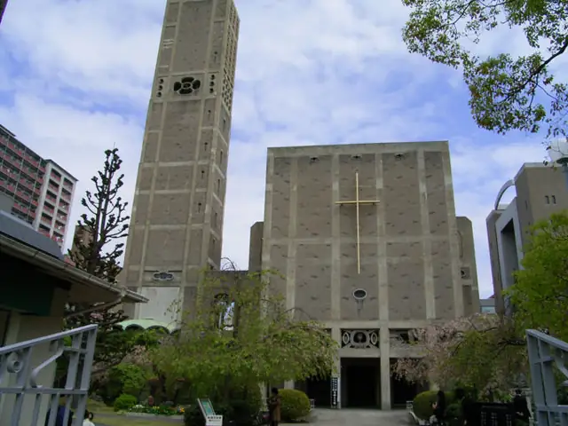
Photo: Original uploader was Taisyo at jp.wikipedia, CC BY-SA 3.0, via Wikimedia Commons World Peace Memorial Cathedral
Noboricho, Naka-ku, Hiroshima, Japan
The city's Catholic church was destroyed by the atomic bomb, and Father Hugo Enomiya-Lassalle, who survived the blast, began building this cathedral in 1950 as a tribute to the victims of war. A 1947 design competition named no winner, so juror Togo Murano drew it himself, mixing a concrete frame with a dome over the sanctuary and small round chapels that echo Byzantine churches. It opened in 1954, Pope John Paul II visited in 1981, and it became an Important Cultural Property in 2006.
- Built
- 1954
- Architect
- Togo Murano
- Style
- Modernism
- Today
- Cathedral
-
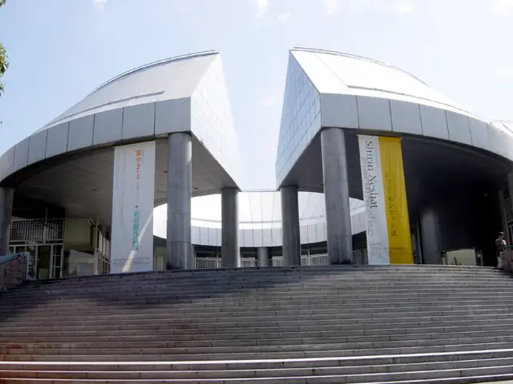
Photo: Taisyo at Japanese Wikipedia, CC BY-SA 3.0, via Wikimedia Commons Hiroshima City Museum of Contemporary Art
1-1 Hijiyama-kōen, Minami-ku, Hiroshima, Japan
Up in Hijiyama Park, just south-east of the city centre, this museum opened in 1989 as the first public museum in Japan dedicated to contemporary art. The building was designed by the architect Kisho Kurokawa. Its collection and exhibitions focus on art made after 1945, on emerging artists, and on works that link contemporary art with Hiroshima's own history. The nearest tram stop is Hijiyama-shita on the Hiroden network.
- Built
- 1989
- Architect
- Kisho Kurokawa
- Today
- Art museum
-
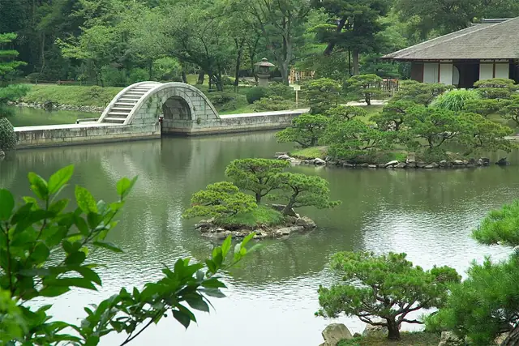
Photo: No machine-readable author provided. Fg2 assumed (based on copyright claims)., Public domain, via Wikimedia Commons Shukkei-en
Kaminobori-chō, Naka-ku, Hiroshima, Japan
Work on this garden began in 1620 for Asano Nagaakira, lord of the Hiroshima domain, and it was laid out by his chief retainer and tea master Ueda Sōko. For centuries it served the Asano family as a villa, and Emperor Meiji briefly stayed here when the Imperial General Headquarters moved to Hiroshima. The family gave it to the prefecture in 1940. Badly damaged in 1945, when it became a refuge for victims of the bombing, the garden was restored and reopened in 1951.
- Built
- 1620
- Architect
- Ueda Sōko
- Style
- Japanese garden
- Today
- Public garden
-
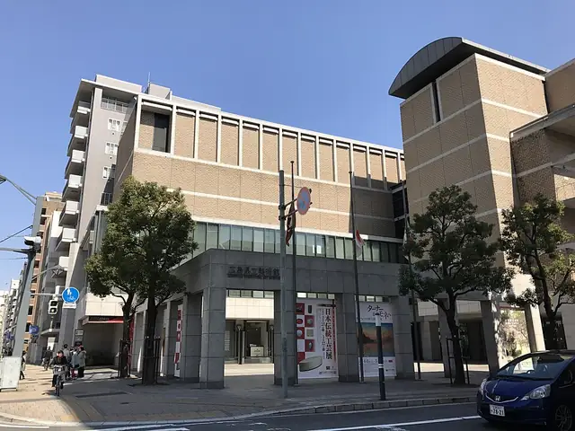
Photo: そらみみ, CC BY-SA 4.0, via Wikimedia Commons Hiroshima Prefectural Art Museum
2-22 Kaminobori-chō, Naka-ku, Hiroshima, Japan
Founded in 1968, the prefecture's art museum sits right beside Shukkei-en garden, so a visit to one leads easily into the other. The museum was rebuilt and reopened in its present building in 1996. It is a short walk from the Shukkeien-mae tram stop and within reach of Hiroshima Station, making it an easy cultural stop between the station and the city centre.
- Built
- 1996
- Today
- Art museum
-
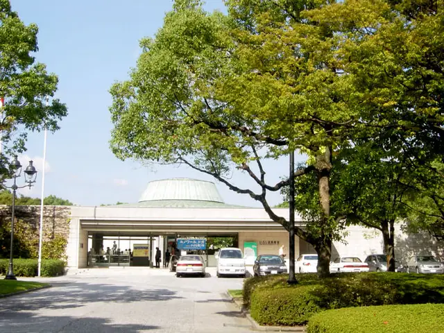
Photo: The original uploader was Kiyokun at English Wikipedia., CC BY 3.0, via Wikimedia Commons Hiroshima Museum of Art
3-2 Motomachi, Naka-ku, Hiroshima, Japan
Opened in 1978 in Hiroshima Central Park, close to the castle, this museum is devoted mainly to European and Japanese modern painting. Its galleries trace a path from Romanticism and Impressionism through the Neo-Impressionists and Post-Impressionists to Fauvism, Picasso and the École de Paris. Further rooms are devoted to modern Japanese painting in the Western style. It is easy to reach from the Kamiya-cho tram stops and the Hiroshima Bus Center, so it fits neatly into a walk between the castle and the Peace Park.
- Built
- 1978
- Today
- Art museum
-
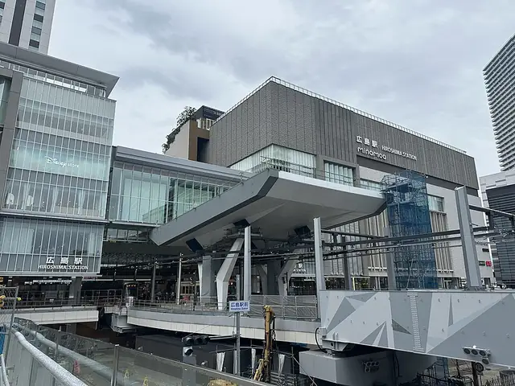
Photo: ノボホショコロトソ, CC BY 4.0, via Wikimedia Commons Hiroshima Station
2-37 Matsubara-chō, Minami-ku, Hiroshima, Japan
Hiroshima's main railway station first opened in 1894 on the Sanyo Railway, and today every San'yō Shinkansen bullet train stops here. In March 2025 a new station building called minamoa opened on the south side. Since August 2025 the city's trams glide straight into its second floor, level with the JR concourse, so you can step off a bullet train and onto a streetcar without going outside. A pedestrian tunnel lined with shops links the Shinkansen entrance with an underground plaza on the south side.
- Built
- 2025
- Today
- Railway station
-
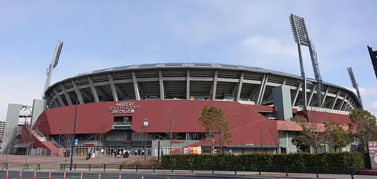
Photo: HKT3012, CC BY-SA 4.0, via Wikimedia Commons Mazda Stadium
2-3-1 Minami-Kaniya, Minami-ku, Hiroshima, Japan
Officially Mazda Zoom-Zoom Stadium Hiroshima, this ballpark opened on 10 April 2009 as the home of the Hiroshima Toyo Carp and replaced the city's First Hiroshima Municipal Stadium. It was designed by Masuoka Architectural in a retro-classic ballpark style and holds 32,000 fans. Hiroshima-based carmaker Mazda bought the naming rights in 2008, and the 'Zoom-Zoom' in its name comes from the company's long-running advertising slogan. The Carp won three straight Central League titles here from 2016 to 2018.
- Built
- 2009
- Architect
- Masuoka Architectural
- Style
- Retro-classic ballpark
- Today
- Baseball stadium
-
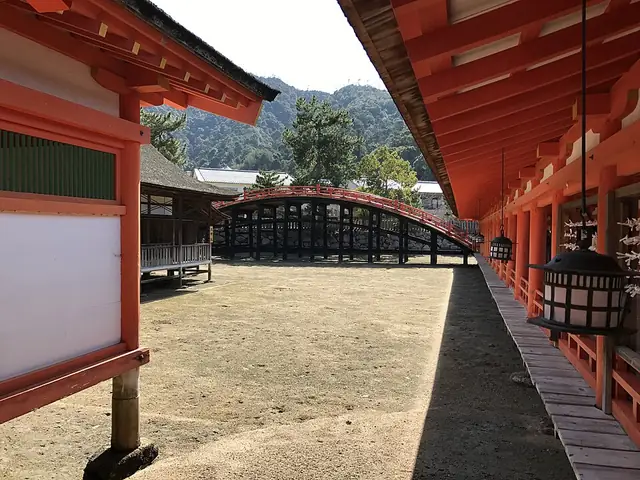
Photo: そらみみ, CC BY-SA 4.0, via Wikimedia Commons Itsukushima Shrine
Itsukushima (Miyajima), Hatsukaichi, Hiroshima Prefecture, Japan
About a ferry ride from the mainland on the sacred island of Miyajima, this Shinto shrine is built to look as if it floats on the sea. The powerful noble Taira no Kiyomori is credited with the present shrine, built during his time as governor of Aki Province in 1168 in the Shinden-zukuri style, with pier-like halls set out over the bay. Its famous vermilion great torii, about 15 metres tall and made of camphor wood, dates from 1875. The shrine complex is a UNESCO World Heritage Site.
- Built
- 1168
- Architect
- Taira no Kiyomori (patron)
- Style
- Shinden-zukuri
- Today
- Shinto shrine
-
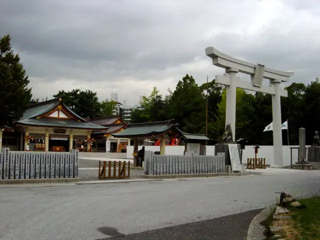
Photo: Taisyo at Japanese Wikipedia, CC BY-SA 3.0, via Wikimedia Commons Hiroshima Gokoku Shrine
Motomachi, Naka-ku, Hiroshima, Japan
This Shinto shrine was founded in 1869 to mourn the Hiroshima domain's dead from the Boshin War, and it took its present name in 1939. The atomic bomb destroyed it in 1945, and it was rebuilt in 1965 inside the grounds of Hiroshima Castle with donations from the people of the city. Today it is one of the most popular places in Hiroshima for Hatsumōde, the first shrine visit of the New Year, and for the Shichi-Go-San celebrations of young children.
- Built
- 1965
- Today
- Shinto shrine


The app's quiz · 10 questions
How well do you know Hiroshima?
The same quiz as in Stamped!: name the landmark, its architect, its style or the year it was finished. Every round is different.
Know Hiroshima well?
Locals know their city best. Suggest a landmark we're missing, a fix to one we have, or share your own photo of one. Every suggestion is checked before it goes into the app.
More cities in Asia
Stamp all 15 in Stamped!
Fly through Hiroshima in photoreal 3D, take its 10-question quiz, plan your days and earn a passport stamp at every landmark. Free on iPhone, iPad, Mac and Apple Vision Pro.
Download on theApp StoreEnjoying the guides? Leave a tip to help keep new cities coming.